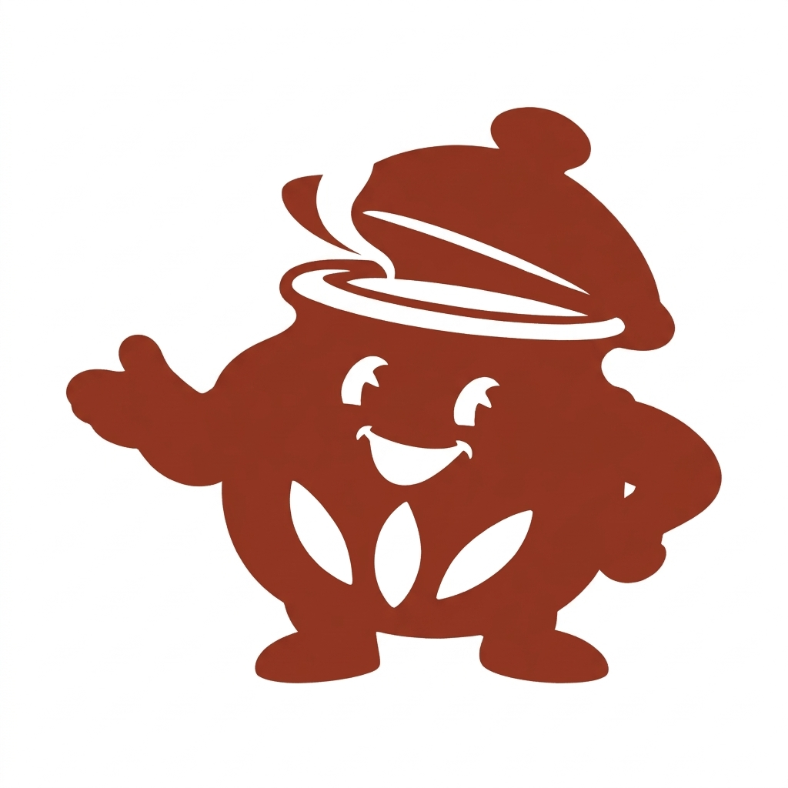
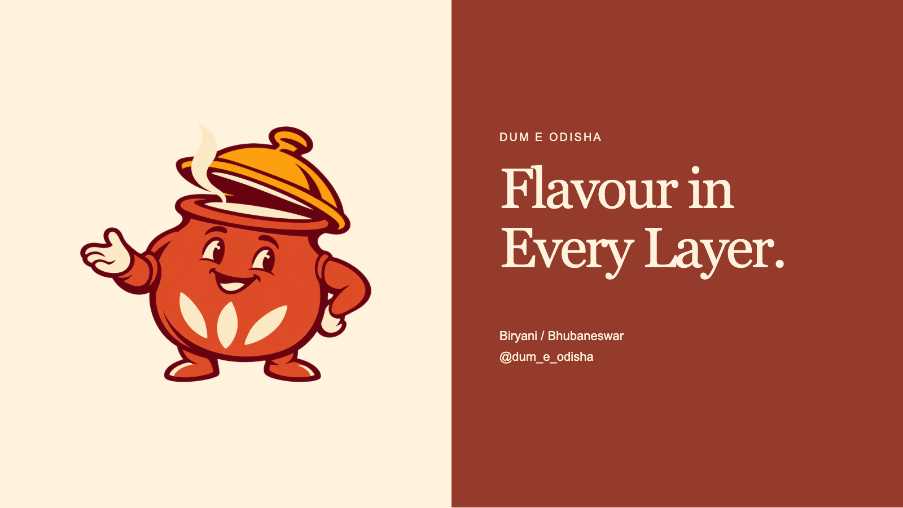

01 / A purely pictorial logo
The Handi Host.
A welcoming host, drawn as the vessel at the heart of dum cooking. No font, no written name, no initials.

Come in.
The handi is open.
The open palm suggests hospitality. The raised lid and steam show the dum-cooking moment. Three rice shapes anchor the picture in biryani, while the rounded pot gives it a friendly, grounded silhouette.
The compact character follows the reference’s strong mascot silhouettes. Its subject and pose are newly developed for Dum E Odisha.

A companion, simplified for ink
Less detail.
The same welcome.

The stamp drawing removes the colour shading and reduces the face to broad knockouts. It keeps the lid, welcoming palm, rice and squat pot.
This is a separately generated simplified interpretation; its contours differ from the colour artwork. The white-background stamp file is supplied honestly as a raster concept.
Use the full-colour character for larger digital placements. The simplified symbol is the better starting point for a seal, stamp or small avatar. The 48–128 px proofs below show what survives.
Actual-size proof
Recognisable when small.
At 48 px the welcoming silhouette remains; the facial highlights and rice details need more room. Prefer at least 96 px for this raster stamp illustration. Reconstruct and physically proof a simplified vector before print production.
The picture in a brand setting
A friendly presence
on a big screen.

The pictorial logo remains lettering-free. The separate screen message and brand name are supporting layout text.

The identity around it.
Use warm cream as the resting field, terracotta for readable information and saffron as an accent. Crop the character only in supporting graphics; keep the complete symbol in a seal or avatar. Give the face and open hand room.